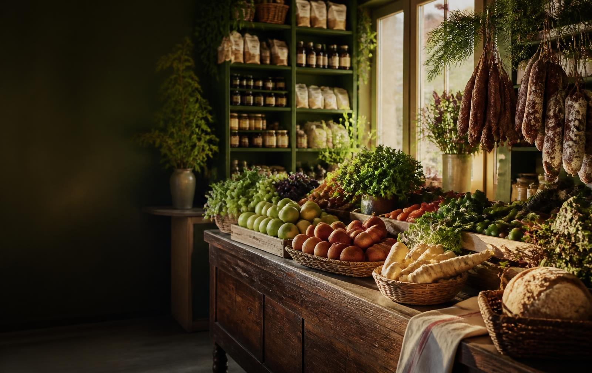

Csak ezen a héten
Lédús magyar alma
1 kg
749 Ft
599 Ft

A környék ízei, egy helyen
Mindennapi finomságok, ropogós zöldségek és gondosan válogatott hústermékek – ahogy otthon szeretjük.
Most érdemes betérni
Csak ezen a héten
1 kg
599 Ft
Csak ezen a héten
1 kg
2 990 Ft
Csak ezen a héten
500 g
549 Ft
Az ajánlatok a készlet erejéig érvényesek. A feltüntetett árak tájékoztató jellegű mintatartalmak.
Mai ötletünk
Egyszerű, színes és igazán kiadós vacsora. A hozzávalókat egy helyen megtalálod nálunk – neked már csak össze kell sütnöd őket.
Szezonja van!
Ropogós alma, zamatos körte, sütőtök és még sok minden, ami most a legfinomabb.
Ételmentés
Minden nap délután fél áron kínáljuk a napi pékárut és a rövidebb szavatosságú termékeket. Így te is jól jársz, és kevesebb élelmiszer megy a kukába.
Nézd meg a mai mentett kosaratNapi pékáru
17 órától −50%
Friss saláták
Amíg a készlet tart
Tejtermékek
Rövid szavatossággal
Tippek és történetek
Kényelmesen, otthonról
Válogass kínálatunkból online, vagy gyűjts pontokat minden vásárlásoddal.